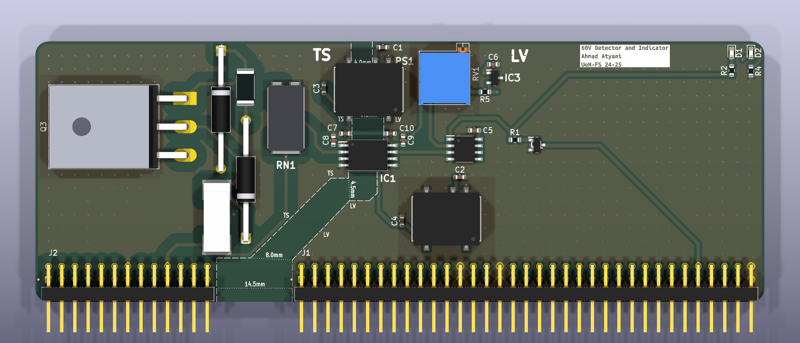
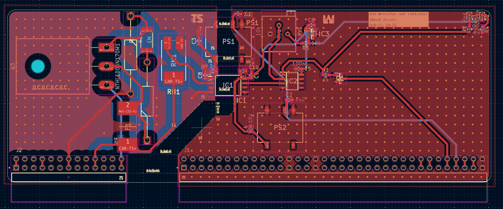

All projects
Formula Student 60 V detector and indicator board
A board for the University of Nottingham Formula Student car (2024/25) that shows whether the high-voltage system is live. Formula Student treats anything above 60 V as dangerous, so the board has two independent ways of showing when the voltage crosses that line.
- Role
- Designed the whole board: schematic, layout, component selection and rulebook compliance
- Team
- University of Nottingham Formula Student, VCU hardware and software sub-teams
- Year
- 2024 to 2025
- Outcome
- Fabricated and fitted to the competition car
- Key parts
- ADuM4195 isolated amplifier, isolated DC-DC converter, 60 V zener diode, 1700 V SiC MOSFET
- Tools
- KiCad, Formula Student rulebook

Add photo: images/fs-board-3d.jpgKiCad 3D view of the board
How it works
The 60 V detector, powered by the car's 12 V supply
- High voltage
- 250:1 dividerPrecision resistors
- ADuM4195Isolated amplifier
- Comparator3 V reference, trimmer sets the 60 V trip
- Red LED and TSALTSAL pulled low when live
- A precision 250:1 resistor divider scales the high voltage down to a safe level.
- An ADuM4195 isolated amplifier carries that small signal across the isolation barrier, so the low-voltage side never touches the high-voltage side.
- A comparator checks the signal against a precise 3 V reference. A trimmer sets the trip point at 60 V.
- Above 60 V, a red LED comes on and a transistor pulls the TSAL signal low. That signal tells the rest of the car, including the Tractive System Active Light, that the system is live. A green LED shows the detector has power.
- An isolated DC-DC converter powers the high-voltage side from the car's 12 V.
The 60 V indicator, powered by the high voltage itself
- High voltage
- 60 V zener diodeConducts above about 60 V
- 1700 V SiC MOSFETSwitched on by the zener
- Warning LED
- A 60 V zener diode only conducts once the voltage goes above about 60 V. It then switches on a 1700 V SiC MOSFET, which drives a warning LED.
- It needs no 12 V supply, no chip and no software, so it still warns you if the low-voltage system is off or has failed. The rules require this.
- A fuse protects it.
The board
- The high-voltage (TS) and low-voltage (LV) sections are physically separated, with the required clearance distances marked on the silkscreen.
- Two right-angle headers plug it into the accumulator system and carry the HVIL, TSAL, power and other signals.
- I designed the whole PCB in KiCad, from schematic to layout, selected the components, checked the design against the Formula Student rulebook and sent it for fabrication. The finished board was fitted to the competition car.

Add photo: images/fs-pcb-layout.pngPCB layout screenshot
Also on the team
I also wrote STM32 firmware for the vehicle control unit (VCU) in STM32CubeIDE. It handles CAN bus messaging between the car's subsystems, working to the team's message definitions and timing requirements.